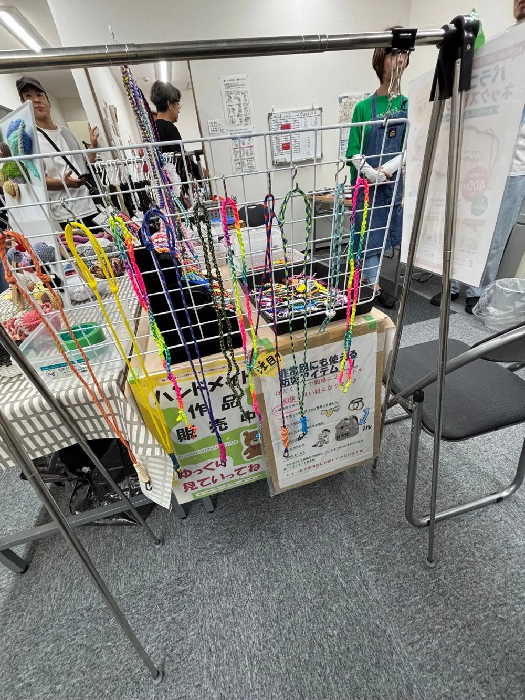
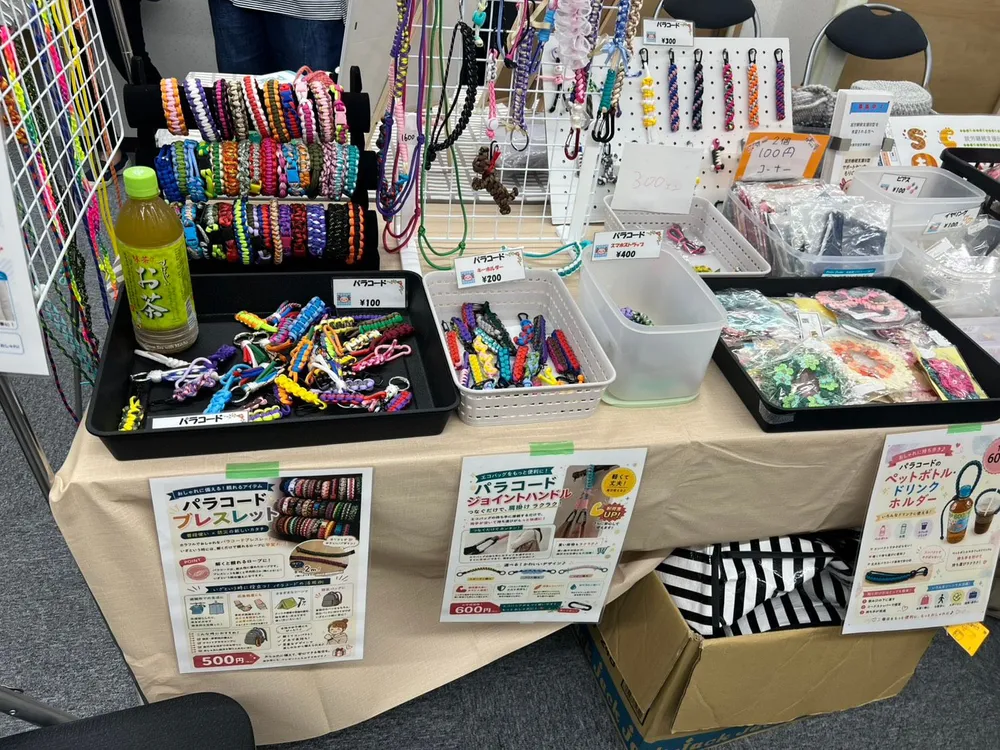
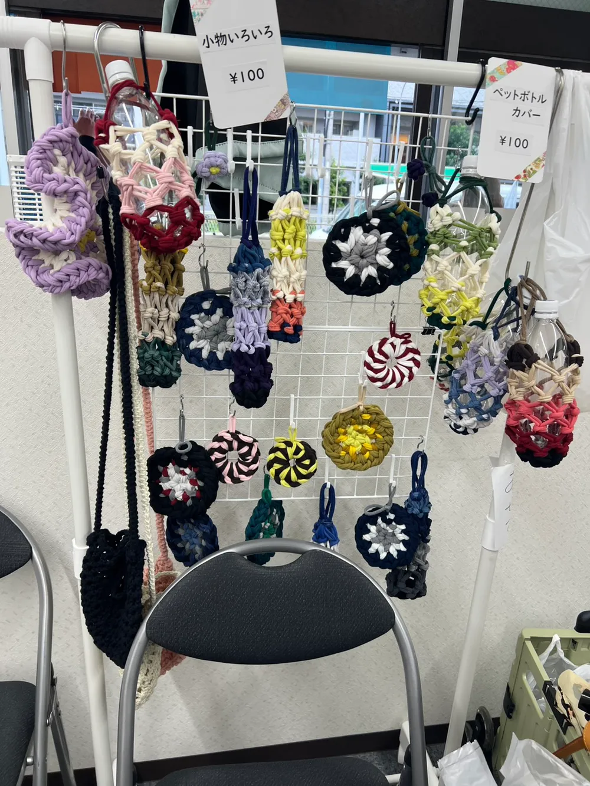
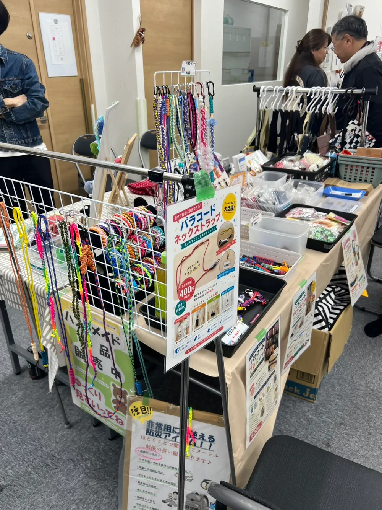
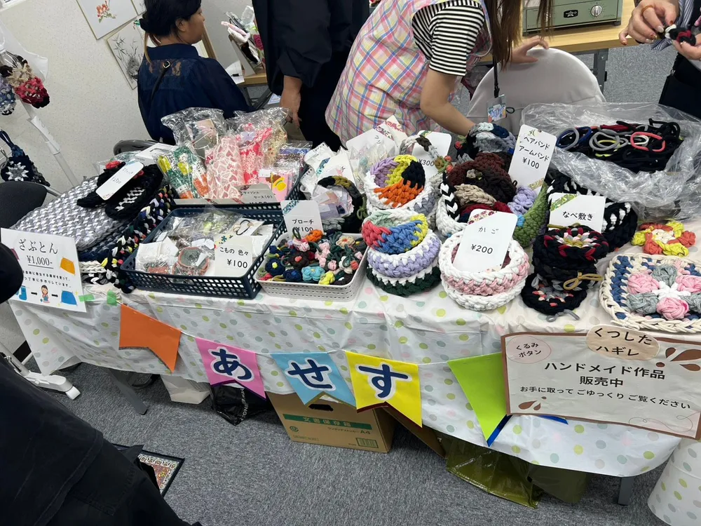
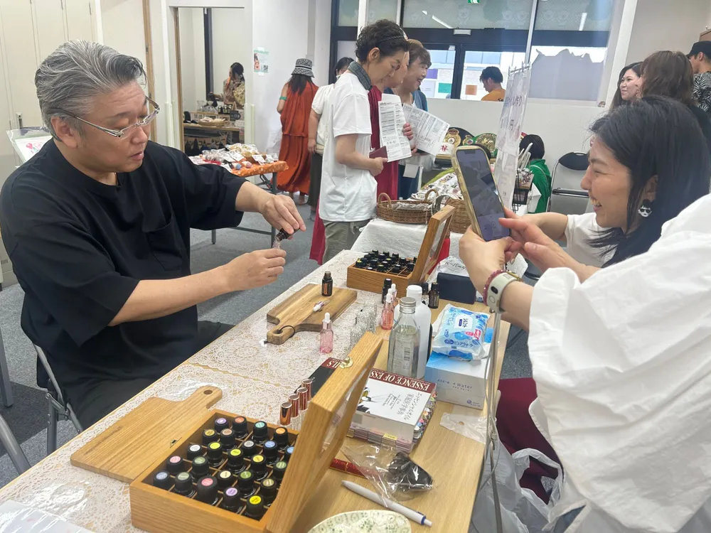
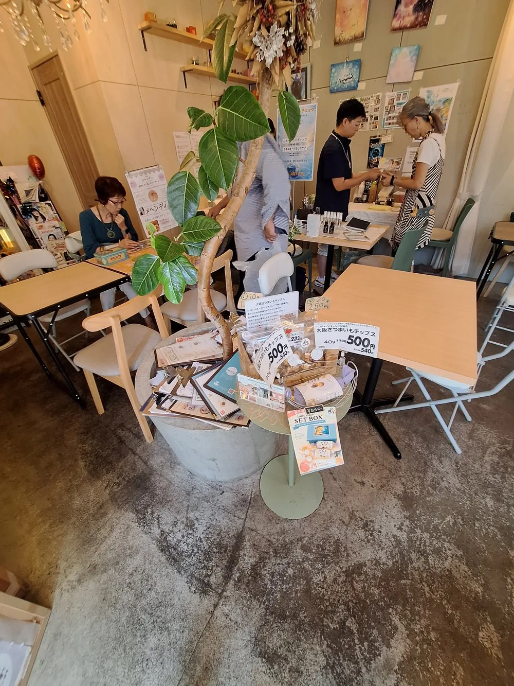
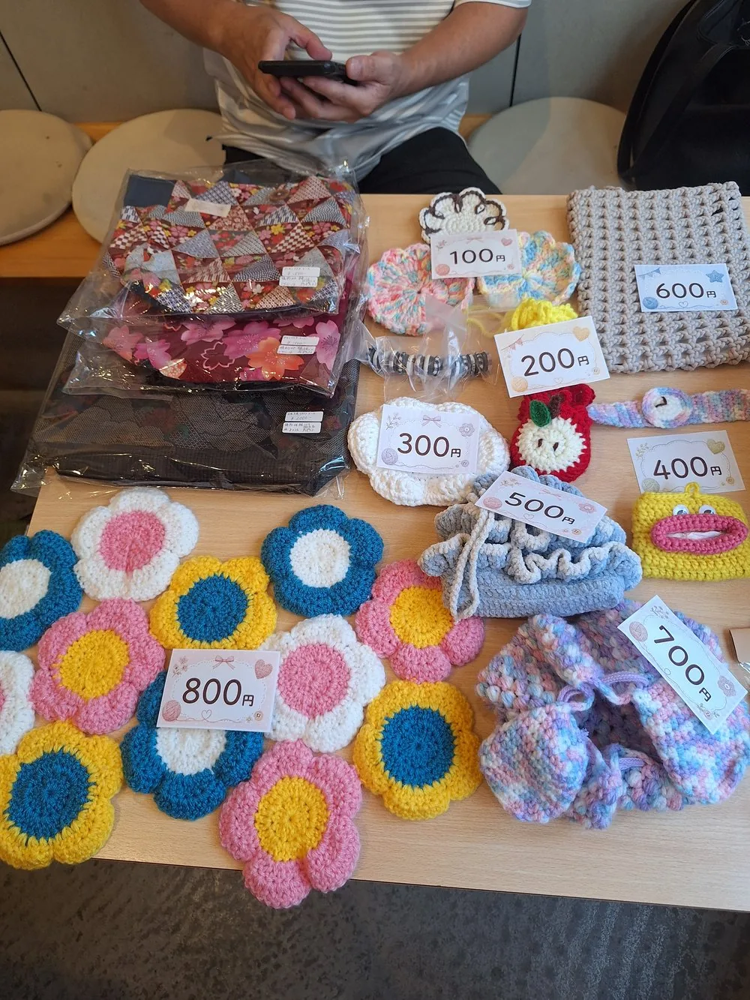
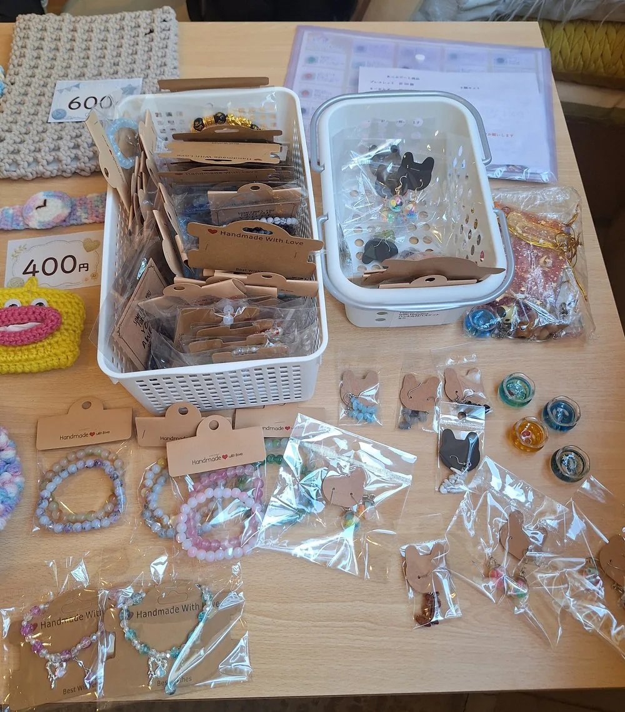

EVENT
出店・イベント情報
マルシェや出店など、ユーの利用者がつくった作品をお届けする機会をご案内します。
2026.9.26
ユーマルシェを開催しました






2026年9月26日(土)、ユー事業所内で「ユーマルシェ」を開催しました。雨にも関わらずたくさんの方が来て下さり、盛況でした!
利用者さんが心を込めて作った手作り作品の販売のほか、ミニゲームや飲食コーナーもあり、地域の皆さまと楽しいひとときを過ごすことができました。お越しいただいた皆さま、本当にありがとうございました🙏
2026.8.24
庄内のカフェさんに出店してきました♪



豊中市・庄内にあるカフェさんのご厚意で、机をお借りして出店させていただきました🌷
かぎ針編みのお花のコースターやミニポーチ、天然石のブレスレット、キーホルダーなど、利用者さんが一つひとつ心を込めて作った作品を並べました。
「かわいい!」「これ手作りなんですか?」と声をかけてくださる方もたくさんいて、みんなにとってとても良い経験になりました。足を止めてくださった皆さま、本当にありがとうございました🙏
今後の出店・イベント情報も、随時こちらでお知らせしていきます。